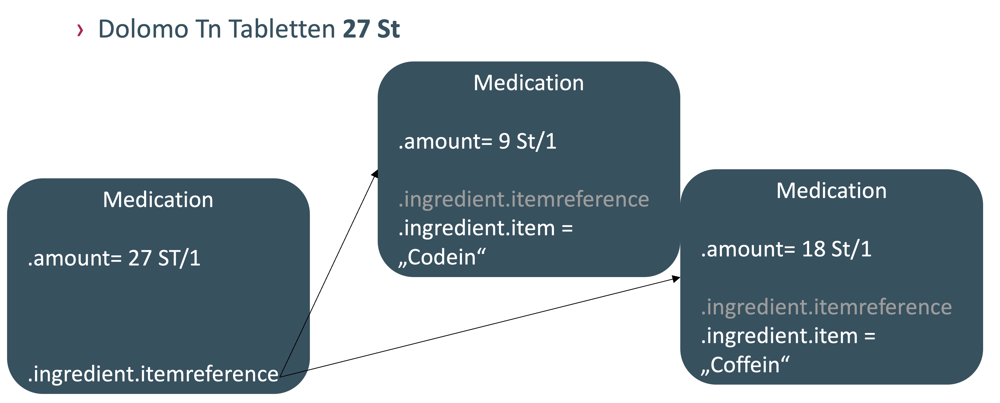

MII IG Medikation
2027.0.0-ballot.rc1 -
Germany
MII IG Medikation
2027.0.0-ballot.rc1 -
Germany
MII IG Medikation - Local Development build (v2027.0.0-ballot.rc1) built by the FHIR (HL7® FHIR® Standard) Build Tools. See the Directory of published versions
| Offizielle URL: https://www.medizininformatik-initiative.de/fhir/core/modul-medikation/ImplementationGuide/mii-ig-medikation | Version: 2027.0.0-ballot.rc1 | |||
| Active Stand: 2026-09-02 | Maschinenlesbarer Name: MII_IG_Medikation | |||
Die vorliegende Spezifikation beschreibt die FHIR-Repräsentation des Kerndatensatz-Moduls Medikation der Medizininformatik-Initiative (MII). Im Folgenden werden die Use Cases des Moduls sowie die dazugehörigen FHIR-Profile und Terminologie-Ressourcen in ihrer verbindlichen Form beschrieben.
| Veröffentlichung | |
|---|---|
| Datum | 2026-09-02 |
| Version | 2027.0.0-ballot.rc1 |
| Status | active |
| Realm | DE |

Das Modul MEDIKATION enthält Datenelemente zur Dokumentation von Arzneimittelverordnungen und -verabreichungen sowie Medikationsplänen. Es ist Bestandteil der Basismodule des Kerndatensatzes der Medizininformatik-Initiative.
Im Implementationsguide werden zwei unterschiedliche Formen von Modellen verwendet:
Beide Formen der Modelle sind entsprechend ihrer jeweiligen Zielsetzung kongruent aufeinander abgestimmt: Mapping-Tabellen zwischen den Bezeichnern können über die Tabellendarstellung in ART-DECOR dynamisch erzeugt werden (Spalten Name und Comment: FHIR-Mapping). In der hier vorliegenden Version des Moduls wurden die gültigen Naming Conventions verwendet, bei denen die Bezeichner im logischen Informationsmodell in deutscher Sprache und die Feldnamen der FHIR-Implementierung in englischer Sprache angegeben sind. In folgenden Versionen des Moduls werden Bezeichner nach neuen Naming Conventions vereinheitlicht.
Informationsmodell Modul MEDIKATION mit Übersicht der Teilmodule:
Es lassen sich u. a. folgende Typen der Dokumentation von Arzneimittelprozessen unterscheiden:
Angaben zur Medikation können von der bloßen Dokumentation der Gabe eines Präparats in einem Behandlungsfall bis hin zu einer detaillierten strukturierten Erfassung von Einzelgaben mit Codierung von Wirkstoff, Darreichungsform, Applikationsweg und Dosis nach international etablierten Standards reichen.
Entsprechend ihres Anwendungsbereiches stehen fünf Teilmodule für die Dokumentation der Medikation zur Verfügung:
Für Medikationsangaben, die sich nachweislich über die PZN auf ganze Packungen beziehen, wird die Einheit für die Instanz von Medication wie folgt angegeben:
"amount": {
"numerator": {
"value": 27,
"unit": "Tablet",
"system": "http://standardterms.edqm.eu",
"code": "10219000"
},
"denominator": {
"value": 1,
"unit": "Package",
"system": "http://unitsofmeasure.org",
"code": "1"
}
}
Kombinationspackungen (nach Anforderung der KBV)

Kombinationspackungen können auf einfache Weise durch eine hierarchische Schachtelung der Medication über eine Verknüpfung ausgehend von Item.reference auf andere Medication-Instanzen dargestellt werden. Damit dient die „obere" Medication-Instanz als Packungshierarchie und als Container der eigentlichen Medikation. Sie enthält auch die entsprechende PZN der Kombinationspackung. Die eigentliche Medikation („Untermedikation") wird als vollständige Medication-Instanz abgebildet — jeweils ohne PZN, mit vollständigen Medikationsdaten mit ASK und ggf. ATC.
Zur Dokumentation von der Verordnung oder Verabreichung unabhängiger Medikationsereignisse, z. B. in Medikationsplänen oder bei der Angabe von Medikationen durch die Patientin oder den Patienten selbst.
Eine Medikationsverabreichung unterscheidet sich von einem Medikationseintrag durch die vollständigeren Informationen über die Verabreichung, die auf den tatsächlichen Verabreichungsinformationen basieren. Ein Medikationseintrag ist damit in der Regel weniger spezifisch. Für ihn ist nicht vorgeschrieben zu dokumentieren, wann genau das Medikament verabreicht wurde, sondern nur, dass ein Bericht über die Einnahme vorliegt — wobei Informationen zu Zeit, Menge oder Rate oder sogar das Medikamentenprodukt fehlen, unvollständig oder weniger präzise sein können. Die Angaben können aus dem Gedächtnis der Patientin oder des Patienten, aus einem Rezept oder aus einer Medikamentenliste stammen.
Daten zur Entlass- und ambulanten Medikation (Medikationseintrag) stehen zukünftig über Angaben im Medikationsplan zur Verfügung. Für Selbstmedikation (Medikationseintrag) lässt sich derzeit keine patientenbezogene Dokumentation absehen; bei Eigenangabe ist sie auch im Medikationsplan enthalten, langfristig ist der Weg über Patientenportale denkbar. Studienmedikation (Medikationsverabreichung) wird in Electronic-Data-Capture-Systemen häufig strukturiert, aber ohne semantische Hinterlegung erfasst — bis auf die Kodierung der Nebenwirkungen in MedDRA als verpflichtende Komponente der Pharmakovigilanz-Meldekette. Einschränkungen können sich hier ggf. durch die Verblindung von Studienmedikamenten ergeben.
Zu einer Medikation sollte als Mindestumfang der Wirkstoff abrufbar sein. In einer weiteren Ausbaustufe sollten darüber hinaus folgende Datenelemente verfügbar gemacht werden, abhängig von den Ausgangsdaten:
Die Datensätze im Modul sind so strukturiert, dass die Information entsprechend den vorhandenen Ausgangsdaten mit unterschiedlichem Detaillierungsgrad angegeben werden kann.
Zur Erfassung von Medikationsplänen besteht die Möglichkeit, mehrere Medikationseinträge in einer Liste zusammenzufassen. Die Art eines Medikationseintrages kann durch folgende Codes weiter spezifiziert werden; die Flags werden jeweils an die Medikationseinträge und an eine zusammenfassende Liste geknüpft:
IHE Deutschland Fallkontext | E210 "stationäre Aufnahme"IHE Deutschland Fallkontext | E230 "stationäre Entlassung"IHE Deutschland Fallkontext | E200 "stationärer Aufenthalt"Zur Dokumentation einer Medikationsverordnung durch medizinisches Personal.
Zur Abbildung von Dosisänderungen während der Behandlung muss jeweils eine neue Instanz von Medikationseintrag bzw. -verordnung mit der veränderten Dosierung angelegt werden. Die angegebenen Behandlungszeiträume sollten dann aneinander anschließen. Bei der Medikationsverordnung kann zusätzlich über MedicationRequest.priorPrescription auf die vorhergehende Verordnung verlinkt werden.
Die Medikationsverabreichung wird zur Dokumentation einer Einzelverabreichung auf Ereignisniveau verwendet, bei dem eine Patientin oder ein Patient ein Medikament einnimmt oder es ihr oder ihm auf andere Weise verabreicht wird — etwa die Einnahme einer Tablette oder eine langlaufende Infusion. Sie ist in jedem Fall mit einer spezifischen Person verknüpft und kann darüber hinaus mit einer spezifischen Behandlungsepisode (Fall) und der zugrunde liegenden Medikationsverordnung verknüpft sein. Diese Ressource deckt die Verabreichung aller Medikamente außer Impfstoffen ab.
Eine Minimalform der Dokumentation von Medikation im Krankenhaus kann von den Häusern der stationären Versorgung auf Basis von Codes des Operationen- und Prozedurenschlüssels (OPS) für zusatzentgeltfähige Medikamente erreicht werden. Eine vollständig strukturierte Medikationsdokumentation findet darüber hinaus regelhaft auf den Intensivstationen im Patientendatenmanagementsystem (PDMS) statt.
Dieser Leitfaden ist im Rahmen der Medizininformatik-Initiative erstellt worden und unterliegt per Governance-Prozess dem Abstimmungsverfahren des Interoperabilitätsforums und der Technischen Komitees von HL7 Deutschland e. V.
Fragen zu der vorliegenden Publikation können jederzeit unter chat.fhir.org im Stream „german/mi-initiative" gestellt werden.
Anmerkungen und Kritik werden in Form von Issues im GitHub-Repository stets gern entgegengenommen.
© 2019+ TMF e. V., Charlottenstraße 42, 10117 Berlin
Dieses Werk ist lizenziert unter der Creative Commons Namensnennung 4.0 International Lizenz (CC BY 4.0).
Zu den Nutzungsrechten der zugrunde liegenden FHIR-Technologie siehe die FHIR-Basis-Spezifikation.
Einige verwendete Codesysteme werden von anderen Organisationen herausgegeben und gepflegt. Es gilt das Copyright der dort jeweils aufgeführten Herausgeber.
Der Inhalt dieses Dokuments ist öffentlich. Zu beachten ist, dass Teile dieses Dokuments auf FHIR Version R4 beruhen, für die das Copyright von HL7 International gilt.
Obwohl diese Publikation mit größter Sorgfalt erstellt wurde, können die Autoren keinerlei Haftung für direkten oder indirekten Schaden übernehmen, der durch den Inhalt dieser Spezifikation entstehen könnte.